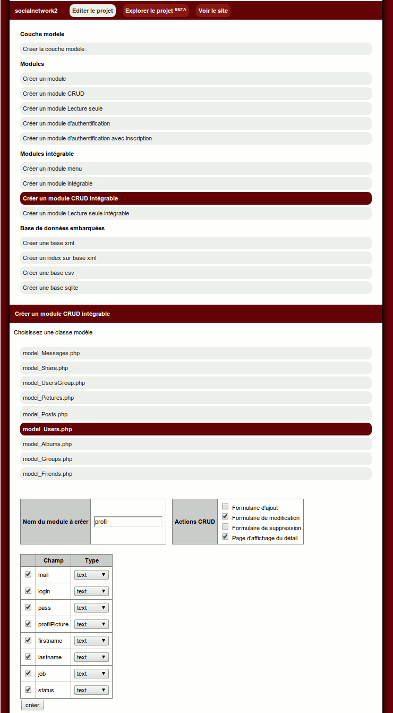
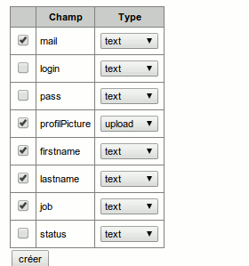
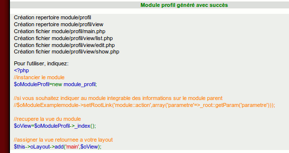
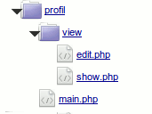
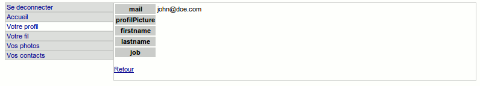
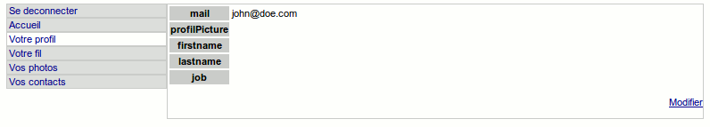
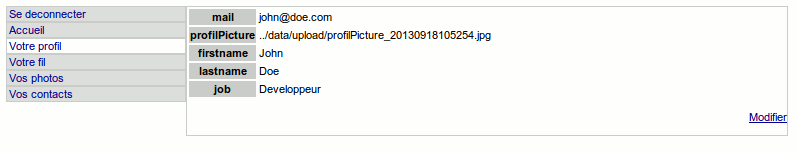
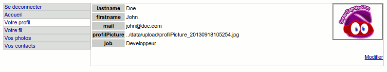

Création d'un réseau social avec le mkframework
-
I Préambule -
II Création et initialisation du projet -
III L'authentification -
IV Créons notre menu -
V Partie privée : le profil -
VI Partie privée : votre réseaux de contacts -
VII Partie privée : votre fil -
VIII Partie privée : administrez vos photos -
IX Profil partagé -
X Design/ esthétique -
XI Conclusion V Partie privée : le profil
V.A Introduction
On a devant nous deux possibilités:
1. tout écrire à la main: la page d'affichage du profil, le formulaire de modification, la partie sauvegarde, upload...
2. profiter du builder pour créer un module "profil" que l'on incluera après l'avoir customisé
Nous partirons ici sur la deuxième option
V.B Génération du module profil
Rendons-nous sur le builder, rubrique module CRUD* intégrable (Create Read Update Delete)
Pour rappel, cette fonctionnalité permet, à partir de votre base de donnée (selon vos profils
renseignées) de générer pour n'importe quel table les pages de listage des enregistrement,
formulaire d'édition, page de visualisation et de suppression d'élément.
Ici nous allons générer le CRUD intégrable de notre table "Users"

Dans notre application, nous avons besoin du module profil pour afficher son profil, le modifier(avec upload de sa photo)
Décochez "Formulaire d'ajout" et "Formulaire de suppression"
Décochez les cases comme sur l'image
Modifier le nom du module à créer pou "profil"
Attention à de bien indiquer pour le champ "profilPicture" dans le menu déroulant "upload"


V.C Customisation du module profil
Nous nous retrouvons avec le module "profil" suivant

Modifions dans le fichier module/profil/main.php la page de redirection dans la méthode save(): après avoir sauvegardé,
le module redirige vers la page de listage par défaut
Remplacer
//une fois enregistre on redirige (vers la page liste)
$this->redirect('list');
Par
//une fois enregistre on redirige (vers la page d'affichage)
$this->redirect('show');
Modifiez egalement la vue par defaut dans la methode _index()
Remplacez
public function _index(){
$sAction='_'.self::getParam('Action','list');
return $this->$sAction();
}
Par
public function _index(){
$sAction='_'.self::getParam('Action','show');
return $this->$sAction();
}
Ensuite, notre module profil ne va permettre de n'éditer que le profil de l'utilisateur indiqué par
le module l'appelant,
On va pour cela lui ajouter une propriété privée "id" et lui ajouter une methode public pour
l'initialiser
Ajouter en début de classe:
private $id;
public function setId($uId){
$this->id=(int)$uId;
}
On va remplacer dans les methodes _edit() et _show()
$oUsers=model_Users::getInstance()->findById( module_profil::getParam('id') );
Par
$oUsers=model_Users::getInstance()->findById( $this->id );
On va remplacer dans la methode save()
$iId=_root::getParam('id',null);
if($iId==null){
$oUsers=new row_Users;
}else{
$oUsers=model_Users::getInstance()->findById( module_profil::getParam('id',null) );
}
Par
$oUsers=model_Users::getInstance()->findById( $this->id );
V.C Inclusion du module profil dans notre module mainPrivate
Dans notre module mainPrivate, nous voulons que notre action "profil" inclu notre module "module_profil" tout juste customisé à cet effet
Pour l'inclusion d'un module dans un autre, on va modifier la méthode _profil du fichier module/mainPrivate/main.php
public function _profil(){
$oModuleProfil=new module_profil();
//on initialise ici le profil à utiliser avec l'id du user connecté
$oModuleProfil->setId( _root::getAuth()->getAccount()->id );
//recuperation de la vue du module profil enrichie
$oView=$oModuleProfil->_index();
$this->oLayout->add('main',$oView);
}
Ce qui donne déjà

Le problème c'est ici que l'on ne peut que voir le profil, on souhaiterait également le modifier
On va simplement ajouter un lien pour permettre la modification
Remplacer à la fin du fichier module/profil/view/show.php
<p><a href="<?php echo module_profil::getLink('list')?>">Retour</a></p>
Par
<p style="text-align:right"><a href="<?php echo module_profil::getLink('edit')?>">Modifier</a></p>

Remplacer à la fin du fichier module/profil/view/edit.php
<input type="submit" value="Modifier" /> <a href="<?php echo module_profil::getLink('list')?>">Annuler</a>
Par
<input type="submit" value="Modifier" /> <a href="<?php echo module_profil::getLink('show')?>">Annuler</a>
V.D Customisions notre page profil
Actuellement, si vous renseignez votre profil, vous obtiendrez ceci:

Ce n'est pas très joli, notons que lors de l'upload, le champ "profilPicture" a bien enregistré
l'adresse de l'image uploadée
Éditons le fichier module/profil/view/show.php comme suit:
<div style="float:right"><img style="width:100px;border:2px solid gray" src="<?php echo $this->oUsers->profilPicture ?>" /></div>
<table class="tb_show">
<tr>
<th>lastname</th>
<td><?php echo $this->oUsers->lastname ?></td>
</tr>
<tr>
<th>firstname</th>
<td><?php echo $this->oUsers->firstname ?></td>
</tr>
<tr>
<th>mail</th>
<td><?php echo $this->oUsers->mail ?></td>
</tr>
<tr>
<th>profilPicture</th>
<td><?php echo $this->oUsers->profilPicture ?></td>
</tr>
<tr>
<th>job</th>
<td><?php echo $this->oUsers->job ?></td>
</tr>
</table>
<p style="text-align:right"><a href="<?php echo module_profil::getLink('edit')?>">Modifier</a></p>
Ici j'ai juste supprimé la ligne concernant l'image du profil, et ajouté en haut de la vue: un div
aligné à droite avec une image ayant pour source le champ ?profilPicture? de notre table users
Ce qui donne

C'est déjà mieux ;)
Lire la suite : VI Partie privée : votre réseaux de contacts